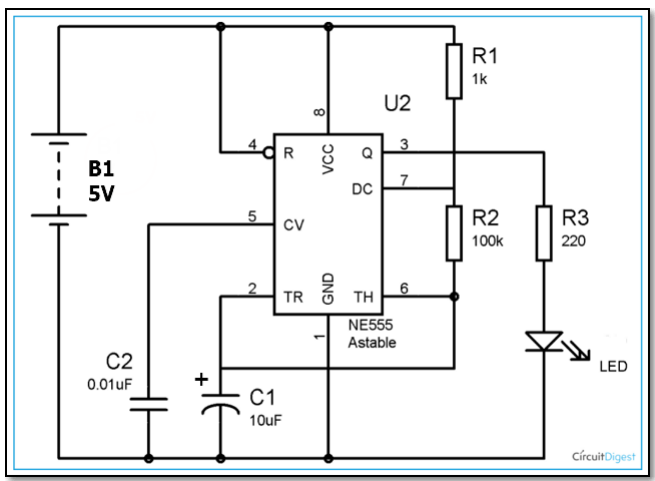

555 Astable timer
As an exercise in breadboarding and circuits, we were given the following diagram to simulate in TinkerCAD and on a physical breadboard. However, due to the current Covid-19 situation, the physical breadboarding practice was cancelled.

I used the diagram and the reference document of the symbols provided in the slides to simulate the circuit.
The timer required power through the VCC pin, and it had to be connected to the ground through the GND pin. Then, I got the input through the R pin and
the output through the Q pin. The output is then used to control a LED.
Link to the final simulation